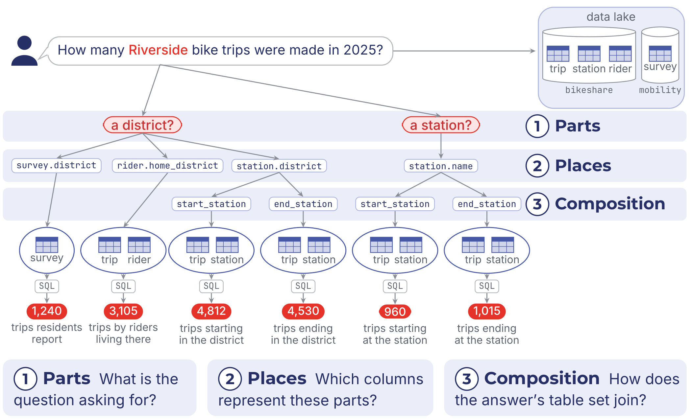
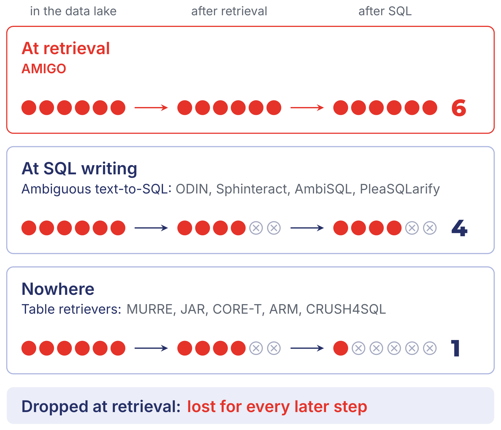
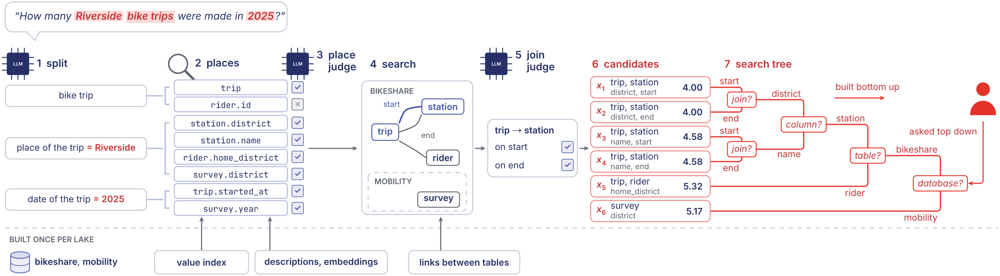
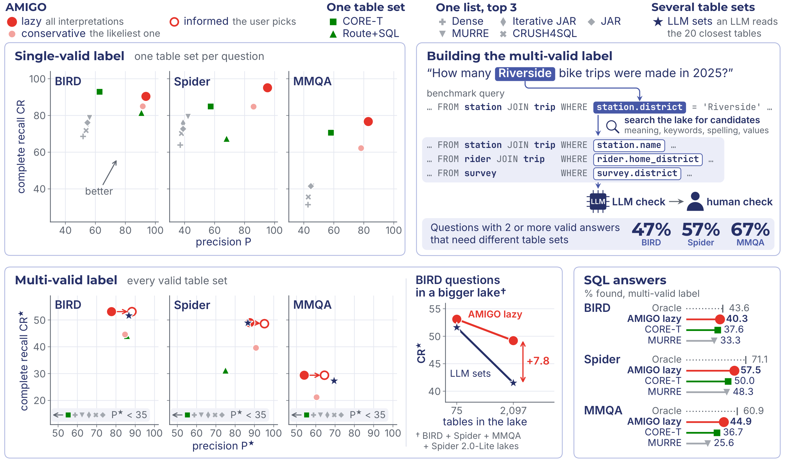

AMIGO
Interactive, Ambiguity-Aware Open-Domain Table Retrieval
1Sorbonne University, LIP62Nanterre University, LIP6
A question asked over a data lake is often ambiguous. Existing table retrievers return one set of tables, and so choose one interpretation in the user's place. AMIGO returns one table set per valid interpretation, and asks the user where the question is ambiguous.
One question, several valid interpretations
In this small lake, one question has six valid interpretations, and each gives a different count. They differ at three levels: the parts of the question, the columns that store each part, and the way the tables join.


Swipe the figure sideways, or tap it to open it in full size.
Where should ambiguity be handled?
A SQL query can only use the tables that were retrieved. An interpretation dropped at retrieval is lost for every later step.
So ambiguity has to be handled at retrieval, before any query is written.


AMIGO finds the interpretations, builds the search tree bottom up, then walks it down with the user
AMIGO splits the question into parts, finds the columns that may store each part, and ranks the ways to join them by cost. The candidates are the leaves of a search tree, and each fork is a question that AMIGO can ask the user.


Swipe the figure sideways, or tap it to open it in full size.
How does AMIGO compare to other approaches?
Existing benchmarks label each question with one table set. We add the other valid table sets, and find several for about half to two thirds of the questions.
On three benchmarks, AMIGO finds more of the valid table sets than existing approaches, with far fewer unneeded tables, and the SQL queries written from its output return more of the expected answers.


Swipe the figure sideways, or tap it to open it in full size.
Can we estimate ambiguity / complexity with AMIGO's output?
Harder questions get wider trees. The number of forks grows overall with the number of valid table sets of a question, and with the number of tables that it needs.


LIVE DEMO
Ask your own question over the BIRD and Spider lakes, and answer AMIGO's questions.
Open the live demo rubyando59-amigo.hf.space Try it on your phone!
Try it on your phone!